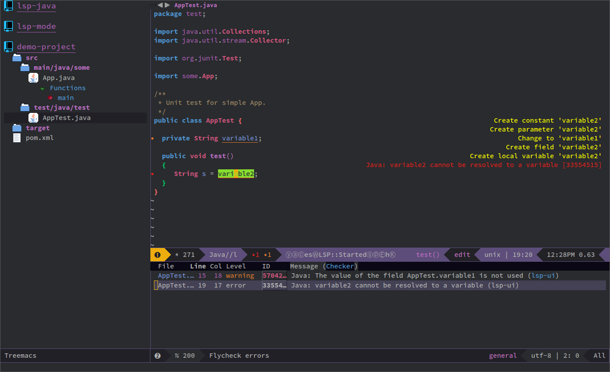
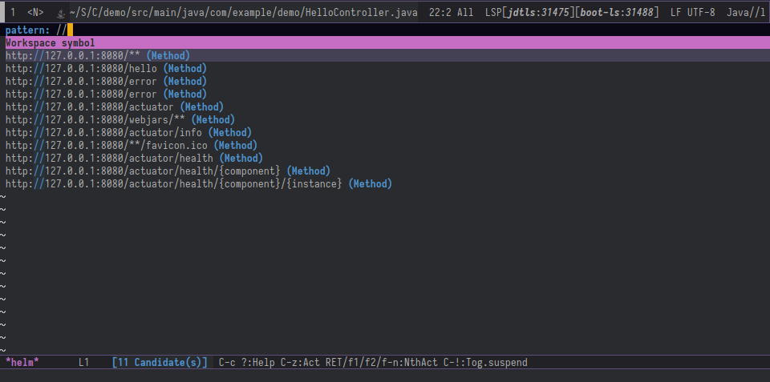
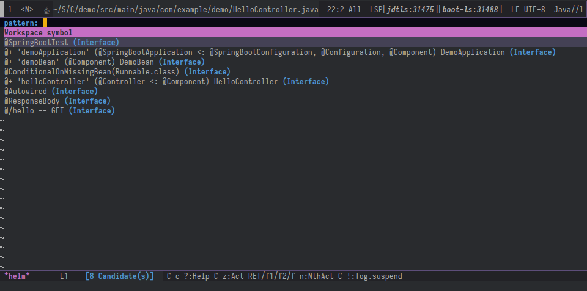
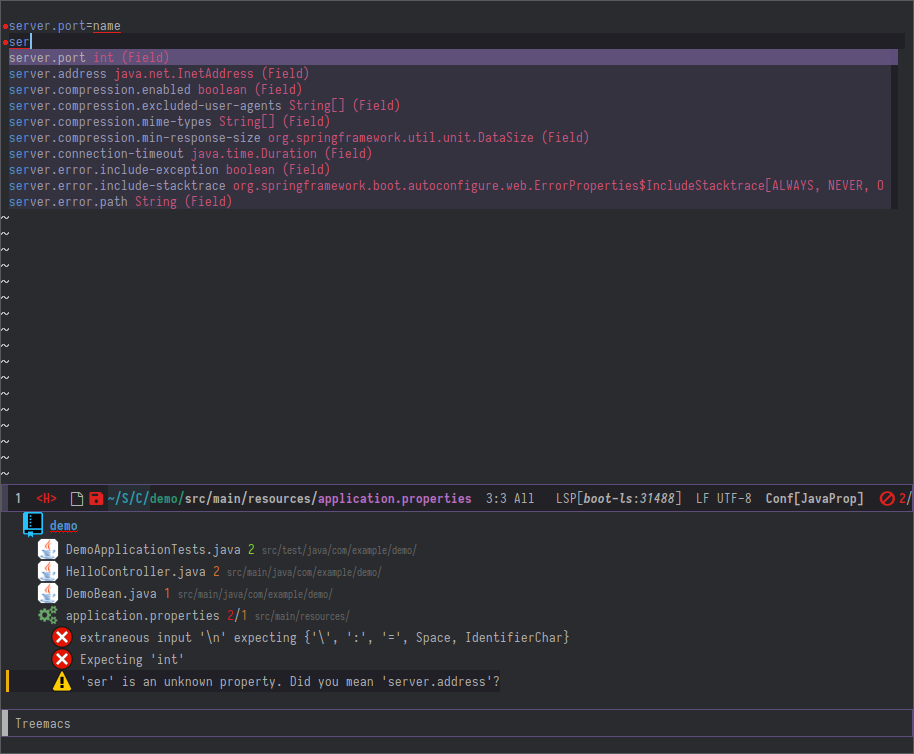
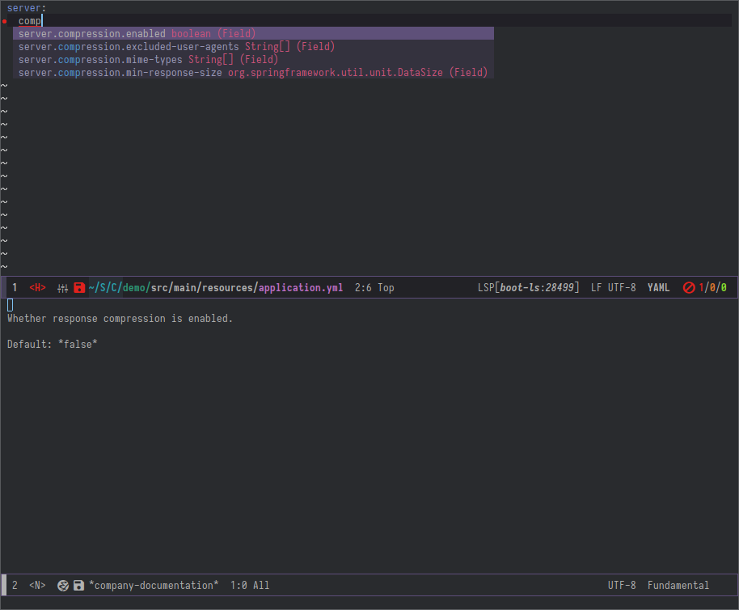
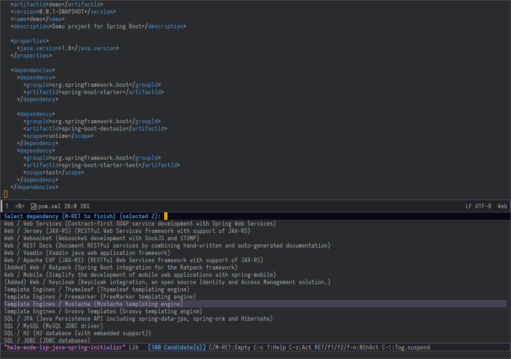

lsp-java#
Emacs Java IDE using Eclipse JDT Language Server.
Features#
LSP java mode supports the following JDT Features:
- As you type reporting of parsing and compilation errors (via flycheck/lsp-ui)
- Code completion - using company-lsp or builtin
complete-at-point - Javadoc hovers - using lsp-ui
- Code actions - using lsp-ui
- Code outline - using builtin imenu
- Code navigation - using builtin xref
- Code lens (references/implementations) - using builtin xref
- Highlights
- Code formatting
- Maven pom.xml project support
- Limited Gradle support
- Visual debugger - dap-mode
- Test runner - dap-mode
- Project explorer integration - treemacs
- Integration with Spring Initializr
Demo#
Here it is a demo from EmacsConf2019 https://www.youtube.com/watch?v=Bbjxn9yVNJ8
Screenshot#

Installation#
Spacemacs#
lsp-java is included in spacemacs (for now only on the dev branch). If you are using the development version of
spacemacs you can simply add (java :variables java-backend 'lsp) to dotspacemacs-configuration-layers.
Install via melpa#
The recommended way to install LSP Java is via package.el - the built-in package
manager in Emacs. LSP Java is available on the two major package.el community
maintained repos - MELPA Stable and MELPA.
M-x package-install [RET] lsp-java [RET]
Then add the following lines to your .emacs and open a file from the any of the specified projects.
(require 'lsp-java)
(add-hook 'java-mode-hook #'lsp)
Eclipse JDT Language Server#
lsp-java will automatically detect when the server is missing and it will download Eclipse JDT Language Server before the first startup. The server installation will be in lsp-java-server-install-dir. It will detect whether dap-mode is present and it will download the required server side plugins/components. If you want to update the server you can run lsp-java-update-server. To run specific version of Eclipse JDT Language Server use lsp-java-server-install-dir.
Quick start#
Minimal configuration with company-lsp and lsp-ui and dap-mode. Now you can explore the methods under lsp-java-*, dap-java-*, dap-*, and lsp-*
(require 'cc-mode)
(condition-case nil
(require 'use-package)
(file-error
(require 'package)
(add-to-list 'package-archives '("melpa" . "http://melpa.org/packages/"))
(package-initialize)
(package-refresh-contents)
(package-install 'use-package)
(require 'use-package)))
(use-package projectile :ensure t)
(use-package flycheck :ensure t)
(use-package yasnippet
:ensure t
:config (yas-global-mode))
(use-package lsp-mode :ensure t)
(use-package hydra :ensure t)
(use-package lsp-ui :ensure t)
(use-package lsp-java :ensure t
:config (add-hook 'java-mode-hook 'lsp))
(use-package dap-mode
:ensure t :after lsp-mode
:config
(dap-mode t)
(dap-ui-mode t))
(use-package dap-java :after (lsp-java))
Supported commands#
LSP Mode commands#
lsp-execute-code-action- Execute code action.lsp-rename- Rename symbol at pointlsp-describe-thing-at-point- Display help for the thing at point.lsp-goto-type-definition- Go to type definitionlsp-goto-implementation- Go to implementationlsp-restart-workspace- Restart projectlsp-format-buffer- Format current bufferlsp-symbol-highlight- Highlight all relevant references to the symbol under point.lsp-workspace-folders-add- Add workspace folderlsp-workspace-folders-remove- Remove workspace folderlsp-workspace-folders-switch- Switch workspace folder
LSP Java commands#
lsp-java-organize-imports- Organize importslsp-java-build-project- Perform partial or full build for the projectslsp-java-update-project-configuration- Update project configurationlsp-java-actionable-notifications- Resolve actionable notificationslsp-java-update-user-settings- Update user settings (Check the options in the table bellow.)lsp-java-update-server- Update server instalation.lsp-java-generate-to-string- GeneratetoStringmethod.lsp-java-generate-equals-and-hash-code- GenerateequalsandhashCodemethods.lsp-java-generate-overrides- Generate methodoverrideslsp-java-generate-getters-and-setters- Generate getters and setters.
Refactoring#
LSP Java provides rich set of refactorings via Eclipse JDT Language Server code actions and some of them are bound to Emacs commands:
lsp-java-extract-to-constant- Extract constant refactoringlsp-java-add-unimplemented-methods- Extract constant refactoringlsp-java-create-parameter- Create parameter refactoringlsp-java-create-field- Create field refactoringlsp-java-create-local- Create local refactoringlsp-java-extract-method- Extract method refactoringlsp-java-add-import- Add missing import
Dependency viewer#
lsp-java-dependency-list- View java dependencies
STS4 Integration (experimental)#
LSP java has integration with STS4 providing the following functionality.
Spring boot support (Experimental)#
In addition to the integration with Eclipse JDT Language Server lsp-java provides integration with STS4 which covers Spring Boot
application.properties, application.yml and .java files.
Usage:#
Make sure that you have configured JAVA_HOME. lsp-java will automatically download the STS4 when you call lsp-java-update-server. In order to enable STS4 integration add the following lines to your config:
(require 'lsp-java-boot)
;; to enable the lenses
(add-hook 'lsp-mode-hook #'lsp-lens-mode)
(add-hook 'java-mode-hook #'lsp-java-boot-lens-mode)
Functionality for .java#
Navigating the source code - Go to symbol in file/workspace#
Easy navigation to Spring-specific elements of your source code.

Commands#
lsp-workspace-symbol - (works better usign helm-lsp)
Examples#
@/shows all defined request mappings (mapped path, request method, source location)@+shows all defined beans (bean name, bean type, source location)@>shows all functions (prototype implementation)@shows all Spring annotations in the code
Quick-access for running apps#
Easy navigation to the provided request mappings of running apps.

Commands#
lsp-workspace-symbol - (works better usign helm-lsp)
Examples#
//shows all request mappings of all running Spring Boot apps and opens a browser for the selected endpoint
Live application information hovers#
STS4 automatically detects JVM processes for running boot applications on your local machine.
For some types of information, STS 4 may also show a 'quick summary' as a codelens.
If there are multiple instances of the app running on your machine, the live data from all those instances will show up in the hover information.
(add-hook 'java-mode-hook #'lsp-java-boot-lens-mode)
Examples#
@Profile: shows information about the active profiles on the running apps@Component,@Bean,@Autowired: shows detailed information about the beans and their wiring from the live app@ContidionalOn...: shows information about the conditions and their evaluation at runtime
Code templates#
Write Spring code with templates, available via regular code completion.
Examples#
@GetMapping@PostMapping@PutMapping
Smart code completions#
Additional code completions for Spring-specific annotations

Functionality for .properties and .yml#
This extension analyzes your project's classpath and parses and indexes any Spring Boot Properties Metadata it finds. Both Maven and Gradle projects are supported.
The data in the index is used to provide validation, code completions and information
hovers while editing Spring Boot Properties in either .properties or .yml format.
Validation and code completion in properties file#
Validation and code completion in yaml file#

Spring Initializr#
lsp-java provides a frontend for Spring Initializr which simplifies the creation of Spring Boot projects directly from Emacs via lsp-java-spring-initializr.

Supported settings#
lsp-java-server-install-dir- "Install directory for eclipse.jdt.ls-server. The slash is expected at the end."lsp-java-jdt-download-url- JDT JS download url. Use http://download.eclipse.org/che/che-ls-jdt/snapshots/che-jdt-language-server-latest.tar.gz if you want to use Eclipse Che JDT LS.lsp-java-java-path- Path of the java executable.lsp-java-progress-string- Java progress status as reported by the language server.lsp-java-workspace-dir- LSP java workspace directory.lsp-java-workspace-cache-dir- LSP java workspace cache directory.lsp-java-themes-directory- Directory containing themes.lsp-java-theme- Theme to use.lsp-java-pop-buffer-function- The function which will be used for showing the helper windows.lsp-java-vmargs- Specifies extra VM arguments used to launch the Java Language Server. Eg. use-noverify -Xmx1G -XX:+UseG1GC -XX:+UseStringDeduplicationto bypass class verification,increase the heap size to 1GB and enable String deduplication with the G1 Garbage collectorlsp-java-9-args- Specifies arguments specific to java 9 and later.lsp-java-errors-incomplete-classpath-severity- Specifies the severity of the message when the classpath is incomplete for a Java filelsp-java-configuration-check-project-settings-exclusions- Checks if the extension-generated project settings files (.project, .classpath, .factorypath, .settings/) should be excluded from the file explorer.lsp-java-configuration-update-build-configuration- Specifies how modifications on build files update the Java classpath/configurationlsp-java-trace-server- Traces the communication between VS Code and the Java language server.lsp-java-import-gradle-enabled- Enable/disable the Gradle importer.lsp-java-import-maven-enabled- Enable/disable the Maven importer.lsp-java-maven-download-sources- Enable/disable eager download of Maven source artifacts.lsp-java-references-code-lens-enabled- Enable/disable the references code lens.lsp-java-signature-help-enabled- Enable/disable the signature help.lsp-java-implementations-code-lens-enabled- Enable/disable the implementations code lens.lsp-java-configuration-maven-user-settings- Path to Maven's settings.xmllsp-java-format-enabled- Enable/disable default Java formatterlsp-java-save-actions-organize-imports- Enable/disable auto organize imports on save actionlsp-java-import-exclusions- Configure glob patterns for excluding folderslsp-java-content-provider-preferred- Preferred content provider (a 3rd party decompiler id, usually). We support https://github.com/dgileadi/vscode-java-decompiler. To enable it, add:(setq lsp-java-content-provider-preferred "fernflower")lsp-java-autobuild-enabled- Enable/disable the 'auto build'lsp-java-max-concurrent-builds- Max simultaneous project buildslsp-java-completion-enabled- Enable/disable code completion supportlsp-java-completion-overwrite- When set to true, code completion overwrites the current text. When set to false, code is simply added instead.lsp-java-completion-guess-method-arguments- When set to true, method arguments are guessed when a method is selected from as list of code assist proposals.lsp-java-completion-favorite-static-members- Defines a list of static members or types with static members. Content assist will propose those static members even if the import is missing.lsp-java-completion-import-order- Defines the sorting order of import statements. A package or type name prefix (e.g. 'org.eclipse') is a valid entry. An import is always added to the most specific group.lsp-java-folding-range-enabled- Enable/disable smart folding range support. If disabled, it will use the default indentation-based folding range provided by VS Code.indentation-based- [Experimental] Enable/disable progress reports from background processes on the server.lsp-java-progress-reports-enabled- [Experimental] Enable/disable progress reports from background processes on the server.lsp-java-format-settings-url- Specifies the url or file path to the Eclipse formatter xml settings.lsp-java-format-settings-profile- Optional formatter profile name from the Eclipse formatter settings.lsp-java-format-comments-enabled- Includes the comments during code formatting.lsp-java-format-on-type-enabled- Enable/disable automatic block formatting when typing;,<enter>or}lsp-java-bundles- List of bundles that will be loaded in the JDT server.lsp-java-code-generation-hash-code-equals-use-java7objects- Use Objects.hash and Objects.equals when generating the hashCode and equals methods. This setting only applies to Java 7 and higher.lsp-java-code-generation-hash-code-equals-use-instanceof- Use 'instanceof' to compare types when generating the hashCode and equals methods.lsp-java-code-generation-use-blocks- Use blocks in 'if' statements when generating the methods.lsp-java-code-generation-generate-comments- Generate method comments when generating the methods.lsp-java-code-generation-to-string-template- The template for generating the toString method.lsp-java-code-generation-to-string-code-style- The code style for generating the toString method.lsp-java-code-generation-to-string-skip-null-values- Skip null values when generating the toString method.lsp-java-code-generation-to-string-list-array-contents- List contents of arrays instead of using native toString().lsp-java-code-generation-to-string-limit-elements- Limit number of items in arrays/collections/maps to list, if 0 then list all.lsp-java-inhibit-message- If non-nil, inhibit java messages echo via `inhibit-message'.
Additional packages#
- lsp-ui : Flycheck, documentation and code actions support.
- company-lsp : LSP company backend.
- treemacs : Project viewer.
- lsp-treemacs :
lsp-modeGUI controls implemented using treemacs.
FAQ#
- LSP Java is showing to many debug messages, how to stop that?
Add the following configuration.
(setq lsp-inhibit-message t) - lsp-ui does not display all of the actions on the current point(e. g "Extract constant")?
LSP UI by default sends current line bounds for action region which breaks forces JDT server to return only "Extract method action."
(setq lsp-ui-sideline-update-mode 'point) - LSP Java does not provide completion, go to definition for some of the files?
When particular file is not part of imported project Eclipse JDT Language Server could not calculate the current classpath.
- How do I change the version of java used by LSP?
Have a look at ~/.emacs.d/workspace/.metadata/.plugins/org.eclipse.jdt.launching/libraryInfos.xml. If you updated your local java path and want LSP to use the new version, try removing the ~/.emacs.d/workspace/ directory and relaunch LSP. Also see #114.